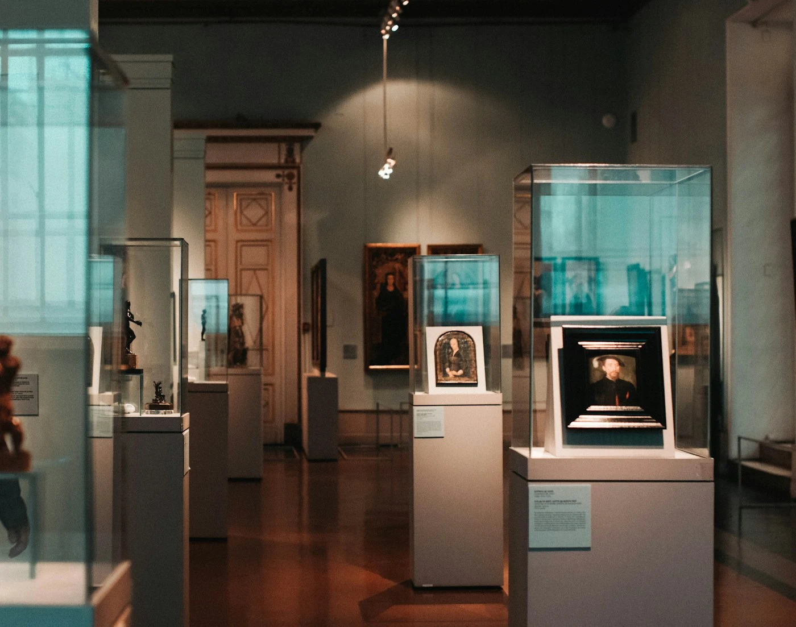
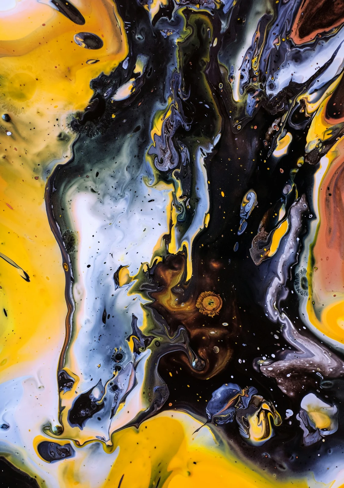

24OCT / SAT
Curator walk · 14:00–15:00
Looking, a little longer.
A relaxed walkthrough of Between the Visible. Explore the curatorial ideas, then bring your own perspective to the conversation.

A new perspective begins here.An exploration of the things we notice, and everything we almost miss.
Art can shift a thought, start a conversation, or change the way a room feels. FORM is an independent gallery concept bringing contemporary painting, sculpture, and moving image into an open, curious dialogue.
Look closely. Stay curious. Come as you are.Showing 3 exhibitions

Take your time. Follow a detail. Bring a friend with a different point of view. Our imagined gallery programme makes room for first encounters, long conversations, and unexpected discoveries.
Meet the fictional artists behind our concept programme. From the intimacy of a painted surface to the scale of an installation, each practice offers a different way into the world.
A relaxed walkthrough of Between the Visible. Explore the curatorial ideas, then bring your own perspective to the conversation.
An imagined conversation with Elias Moreau on process, found objects, and making space for uncertainty.
Find us in our imagined Copenhagen home. Stop in for an exhibition, join a conversation, or simply spend some time with something new.
| Tuesday — Sunday | 11:00 — 18:00 |
| Thursday | 11:00 — 20:00 |
| Monday | Closed |
Illustrative opening hours for this gallery concept.
Concept admission: adults DKK 120; students DKK 70; under 18s free. Guided visits are shown as sample events. No actual tickets are issued.
Fictional location: central Copenhagen, Denmark. A live gallery site would include a verified address, transport directions, accessible entrance details, and step-free route information. Please use the demo planner to explore the visit experience.
School, university, and private group visits would be arranged with the gallery team. This pitch demonstrates the enquiry journey without sending messages or collecting personal details.